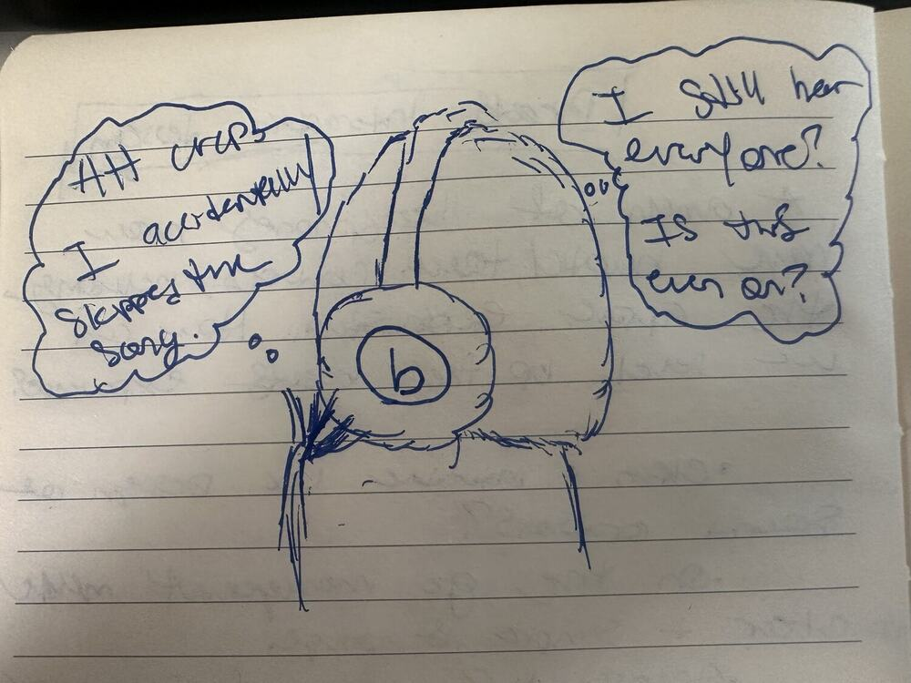
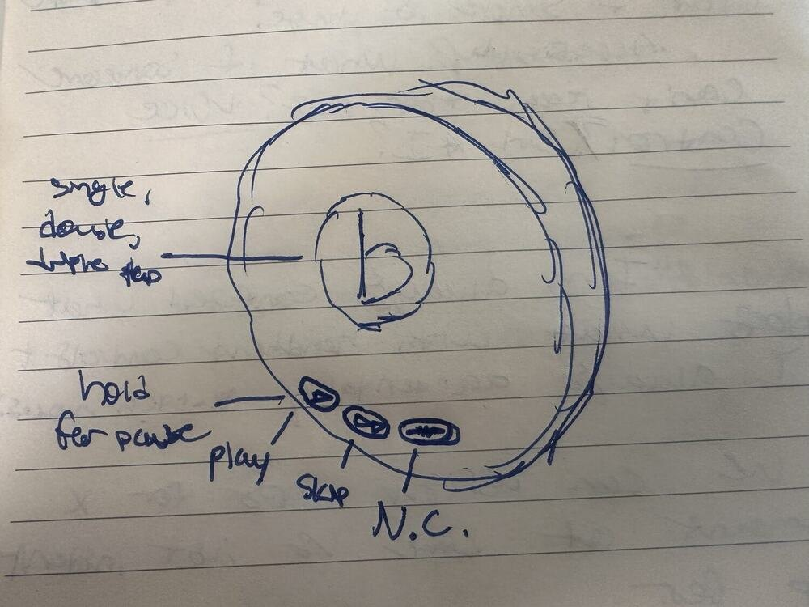
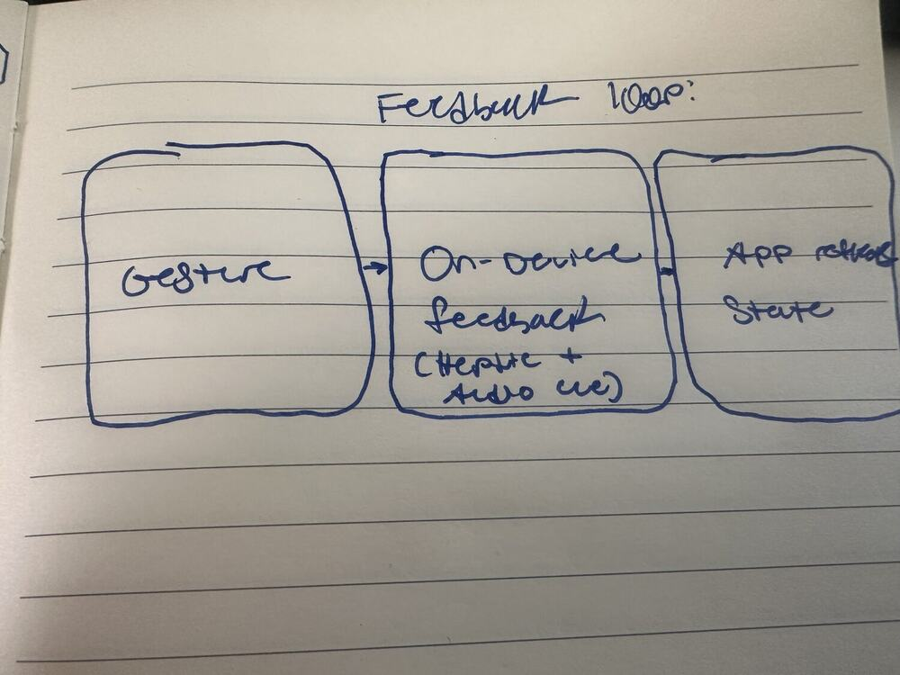
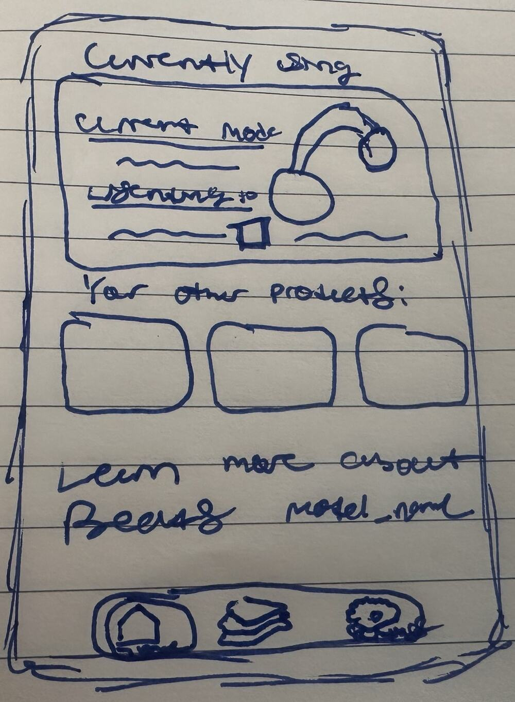
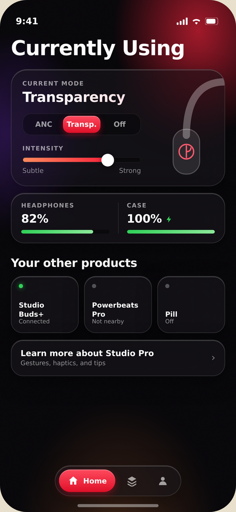
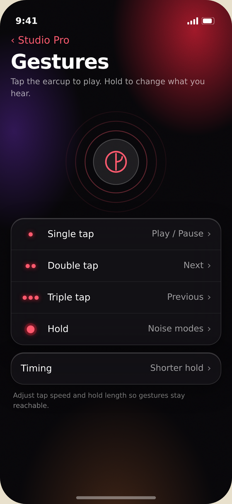
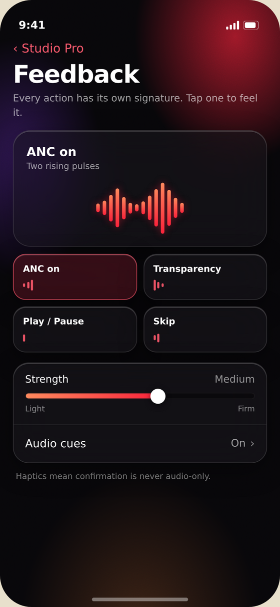
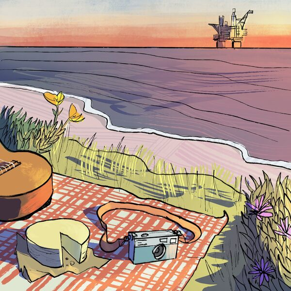

Type
Self-directed concept
You can't see the controls on headphones you're wearing. Cue is a concept for making them legible by feel and sound alone — a clear gesture language, distinct haptic + audio cues for every action, and a companion app that lets you see and shape it.
Physical controls on headphones are invisible in use — you operate them by memory, reaching blindly for an earcup. Two of the most-used actions, switching noise modes and controlling playback, often share the same surface, so three things go wrong constantly: you trigger the wrong action, you can't tell what state you're in, and nothing confirms that what you did actually worked.
The feedback gap is the design problem. If you can't see the control, the response has to carry the whole message.

Because the interaction is eyes-free, feedback has to be distinguishable by feel and sound alone — every action needs its own signature, not one generic buzz. That's the same principle behind the PS5 DualSense: it communicates state through differentiated haptics, no screen required. Cue applies that thinking to audio hardware.
The core decision: playback and noise control get different categories of gesture, so they can never be confused. Taps drive playback; a press-and-hold — a physically distinct motion — changes noise mode.
Volume is intentionally left to phone and voice — scoping it out keeps the on-ear language small and unambiguous. (A hold-and-swipe could add it later if testing shows people want it on-device.)

Every gesture resolves the same way: a distinct on-device response you can feel and hear, mirrored by state you can check in the app. One coherent loop across hardware and interface.
Tap or hold on the earcup — no looking, no fumbling for a button.
A unique signature per action — e.g. two rising pulses for ANC on, one short tick for a skip.
The companion app reflects current mode and lets you remap gestures and tune feedback.

The companion app does the work the hardware can't: it makes the invisible visible. Three screens carry it — where you see your current state, remap what each gesture does, and tune how strong the feedback feels.
Built in Apple's current language, Liquid Glass: controls float above content on glass layers rather than sitting in solid blocks, the tab bar lifts off the bezel as its own bubble, and radii are concentric with the hardware. Restrained, though — iOS 26 shipped translucent and iOS 27 pulled it back for legibility, so the glass here stays opaque enough to read and text never sits directly on it.


Sketch to hi-fi: the mode is stated in words before it's a control, intensity gets a direct slider, and the earcup illustration bleeds off the card so the physical product stays present in the interface — what you feel and what you see stay tied together.
The other two screens keep the same restraint — one idea each, with a visual anchor rather than a wall of settings.


Three decisions worth naming. The signature is the hero — you select an action and see its waveform, because a haptic you can't preview is a setting you can't judge. Timing lives on the Gestures screen, not buried under a separate accessibility menu — the people who need a slower tap window shouldn't have to go somewhere else to find it. And each screen carries one idea: what the gestures are, or how the feedback feels. Anything deeper gets its own page rather than crowding these.
The whole concept rests on one claim: that you can operate this without looking, because every action answers back. So rather than describe it — tap the earcup. Single tap, double, triple, or press and hold. Watch the app keep up, and listen: each action has its own cue.
Sound on. Designed and rapidly prototyped by me — the same hands-on approach I used at Disney.
Delivering every action through feel, sound, and sight is an accessibility strategy before it's anything else — no single sense carries the message, and no single ability is required to operate it. Three principles make that real.
A haptic pulse for people who can't rely on sound, an audio earcon for people who can't see the app, and live state in the app for anyone who catches neither on-ear. AirPods already vary their audio cues — clicks for taps, chimes for holds — so Cue adds a haptic layer on top, meaning confirmation is never audio-only. That matters if you're deaf or hard of hearing, or just on a loud train.
"What if someone can't gesture?" is the right question — and the gesture is only ever one path to each action:
| Action | On-ear gesture | Voice | Hands-free | In the app |
|---|---|---|---|---|
| Play / pause | Single tap | “Hey Siri, pause” | Switch Control · adaptive controller | Tap control |
| Next / previous | Double / triple tap | “Skip,” “go back” | Switch Control · adaptive controller | Tap control |
| Noise mode | Press & hold | “Turn on Transparency” | Switch Control, or nod to confirm the voice prompt | Mode switch |
| Calls / alerts | Tap to answer | Siri | Nod / shake head | Mirrored call controls |
Voice runs through Siri or Voice Control. Head nod/shake handles calls and notifications with no hands at all. For people who use neither, Switch Control and adaptive controllers (like the Sony Access controller) drive the same actions — and the app mirrors everything, working with VoiceOver and Voice Control.
For people who can gesture but need it easier, timing is a setting, not a fixed rule — Apple already exposes Press Speed and Press & Hold Duration for AirPods. Cue makes that first-class: the customization screen slows the multi-tap window and shortens the hold, so triple-tap and press-and-hold still work with tremor, limited dexterity, or one-handed use.
The gesture is the fastest door, never the only one. Every path resolves to one state and confirms in all three channels, so no single ability — and no single sense — is required to operate Cue.
Cue's default is to act and confirm with feedback, not ask. Play, skip, and noise-mode all happen instantly, and the haptic + audio cue tells you where you landed — so Cue almost never asks a question. The one exception is the accessibility path: if you change noise mode by voice or an alternate trigger instead of the hold, there's no "cycle till it feels right" loop, so Cue confirms — "Transparency?" — and you nod yes.
Head-bobbing to a song looks a lot like a confirmation nod. If Cue listened for a nod all the time, it would fire false confirmations constantly.
Solution: head-gesture confirmation is scoped, time-boxed, and never the default. It only listens for a few seconds after Cue asks a question — the same way Apple scopes head gestures to just-announced calls and notifications — and defaults to "no change" if that window times out. During normal listening it isn't running at all, so a nod is just you enjoying the song.
Because this is a concept, the honest close isn't a metric — it's what I'd test to know if it works:
Designing the test is part of the design — it shows I know a concept isn't proof.
